| 日付 | 2025年4月19日（土） |
|---|---|
| メンバー | 家族（妻、長女・14歳、長男・11歳、両親、姉一家） |
| アクセス | 電車 |
親族で大阪万博に行くことにする。
東京オリンピックはチケットが買えず行けなかったが
子供がいるうちに1回くらいは日本でやるイベントに行っておきたい。
工事の遅れや費用などいろいろとニュースを賑わせてはいたが、先週無事に開幕した。
混雑するのは嫌なのだが、受験やら試合やらの都合で、開幕直後に行くことにする。
6時前に起床。7時の新幹線に乗るため、新横浜駅に移動。

ほぼ初めての新幹線。10年前にも乗ったことがあるのだが、子供たちはさすがに覚えていない。
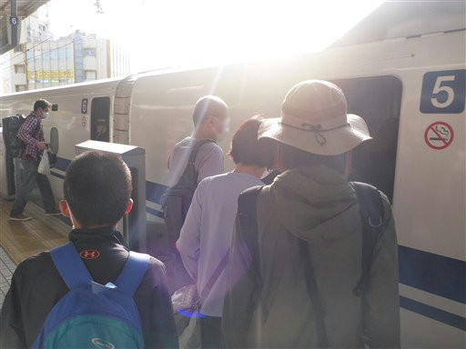
夢洲駅に到着。
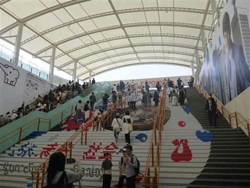
万博会場の大きなゲート。初日は大混雑とニュースが流れていたが、さほど待たずに入れる。
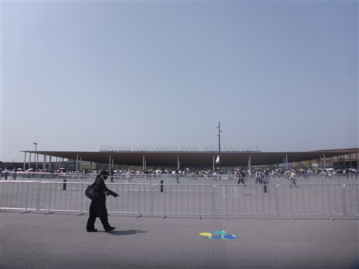
入場すると目に飛び込んでくるのは大屋根リング。
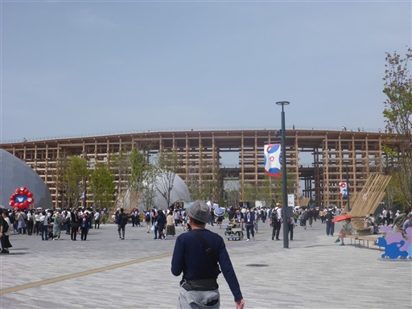
近づくとものすごい迫力。超巨大な建造物だ。
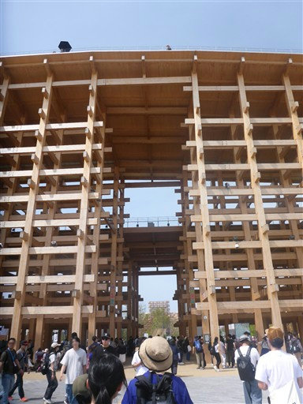
そしてリングの中は明るく開放的。素晴らしい建造物だ。
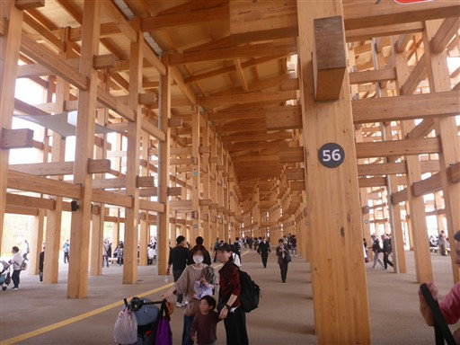
リングの中に入る。パビリオンの事前抽選は全て外れており、あまり下調べはできていない。
まずはコモンズAに入る。
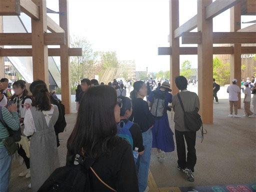
会場内はこんな感じ。
一国一国が小さいブースで、その国の製造品や文化的な物などが置かれている。
知らない国はほとんどないと思っていたが、それでも聞いたこともない国がいくつかある。
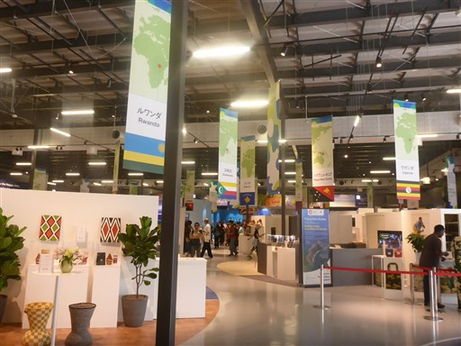
一番目を引いたのがこちらの楽器。スティールパンというらしい。
叩く場所によって音程が変わる。実際に叩いてみることができる。
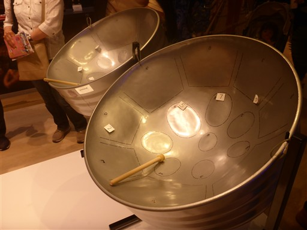
昼食。レストランは混みそうなのでベンチとテーブルで
持参した食料と屋台で買ったもので済ませる。
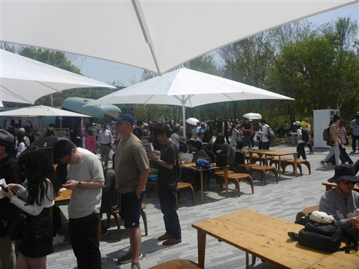
トイレ。一番奥に広いトイレに通じる入口があるのだが、
その手前にトイレのドアが並んでいるのでみんな全く気付かない。
いくら何でも設計が悪すぎるだろう。
「ユニバーサル」と記載されていて、男女兼用になっているのも何がやりたいのかよく分からない。
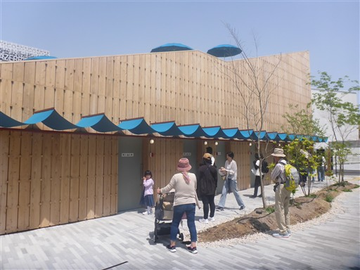
地面から出るミスト。ものすごく細かい霧で中に入ると前が全く見えない。
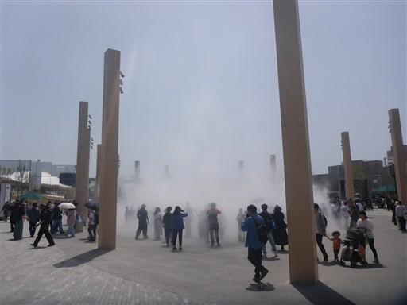
霧の中はこんな感じ。あまり体は濡れない。
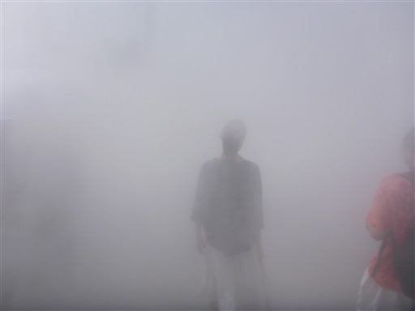
どこかのパビリオンに入ろう、ということでスイスパビリオンに行ってみる。
出口の売店で売られていた手で回す小さなコマが4000円で驚いた。
スイスの物価の高さを実感。
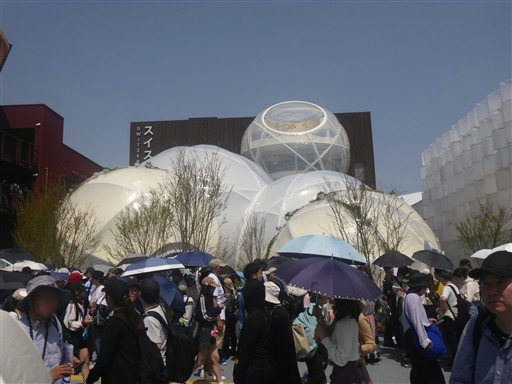
続いて大屋根リングの上に登ってみる。
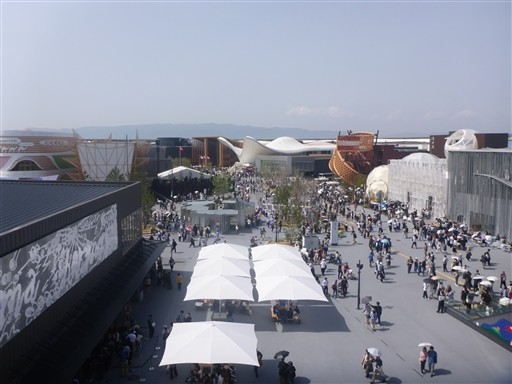
ちょうど噴水ショーをやっている。
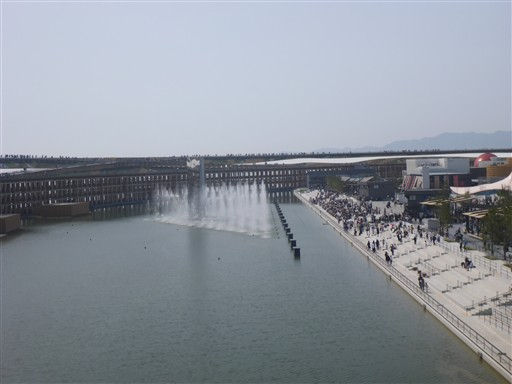
下をのぞき込む。海の上の部分は道路になっていて一般人は立ち入れないようだ。
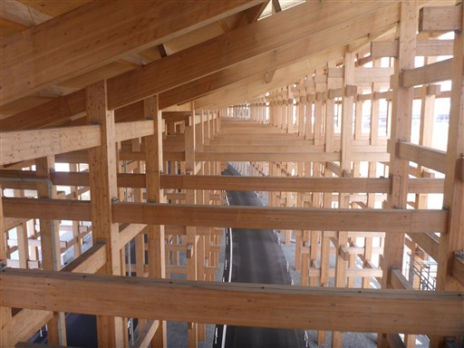
リングの上は様々な植物が植えられている。
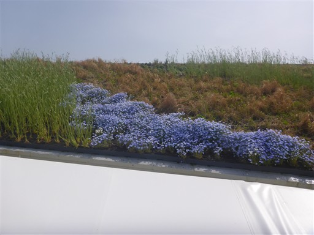
リングをぐるっと半周歩く。
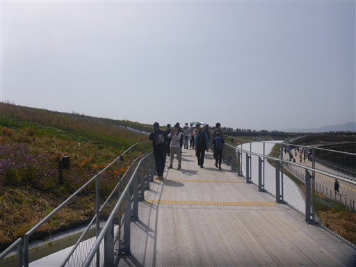
両親は疲れたとのことで子供の遊び場近くのベンチで休憩。
万博会場はベンチはたくさんあるが、日差しを避けられる場所は少ない。
両親が休んでいる間にオフィシャルストアで土産物を買う。
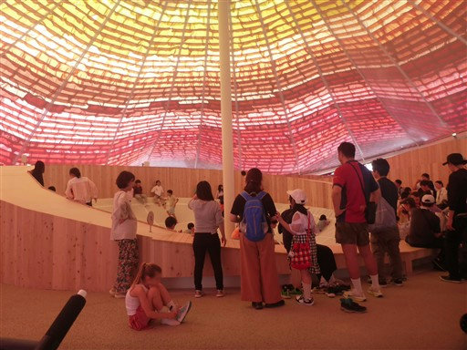
ミャクミャクの像。
子供が見たら泣き出しそうなこの不気味なマスコットキャラクターもだいぶ見慣れてきた。
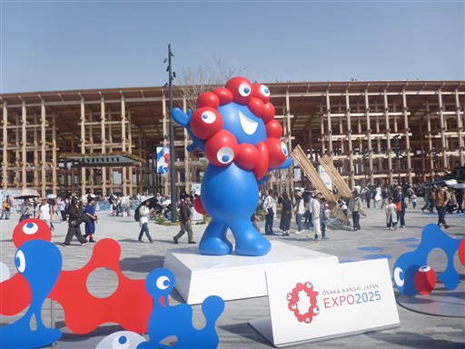
巨大なガンダム像。
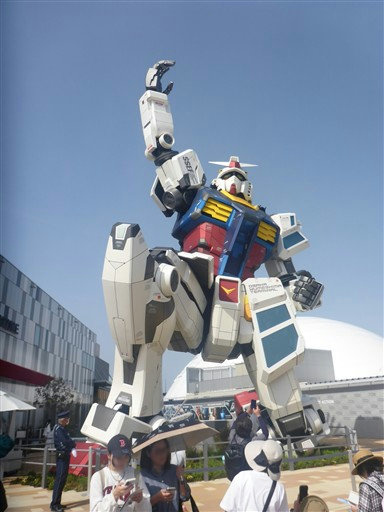
車椅子で作った謎のオブジェ。
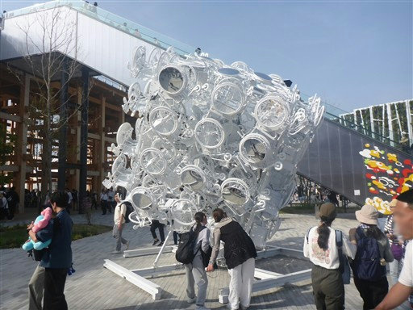
お次はサウジアラビアパビリオンに行ってみる。
富裕層の豪邸のような外観だ。
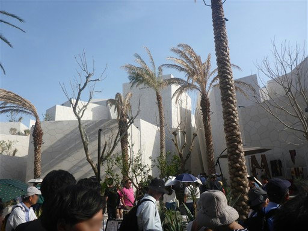
高く聳える建物は迫力がある。
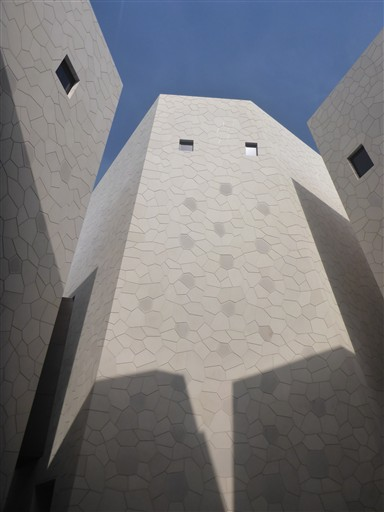
最後に時間が余ったので空いているところを探して入ってみる。
こちらは漆塗りの地球儀。非常に美しい。
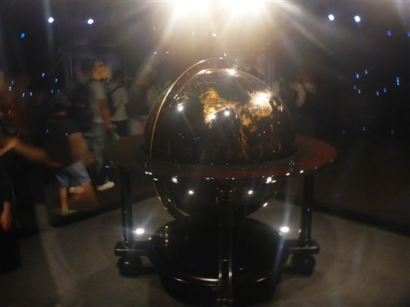
帰りの時間が迫っているのでパビリオンには入らずに周囲を散策。
アゼルバイジャンパビリオンはアラベルク模様のような外観だ。
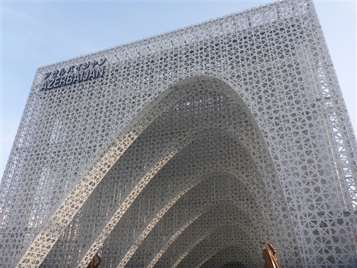
韓国パビリオンの前には巨大ディスプレイがある。
映像の美しさと大きさは圧巻だ。
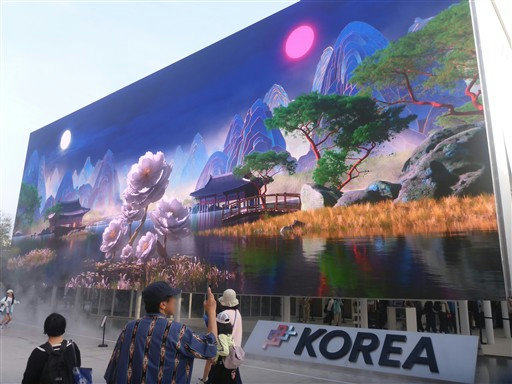
帰りの時間になったので万博を後にする。
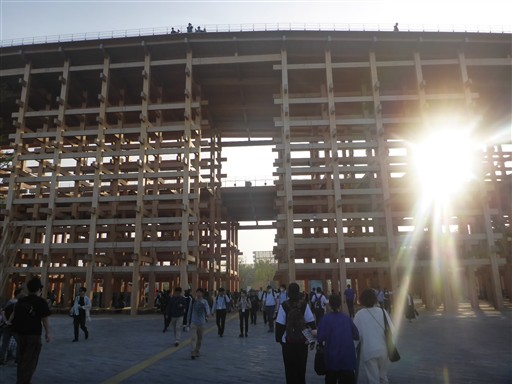
帰り道は駅までかなり大回りさせられる。
初日に駅までの道が大混雑したので導線を変えたのだろう。
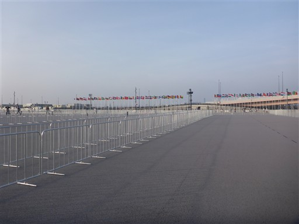
夢洲駅に到着。
展示物は、まぁこんなものか、という感じではあったが
各国が趣向を凝らした建造物と大屋根リングは素晴らしかった。
久々に親族一同で遊べたのも良い思い出になった。
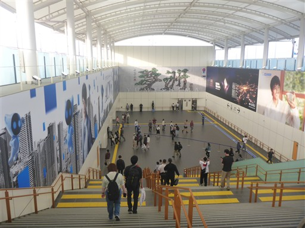